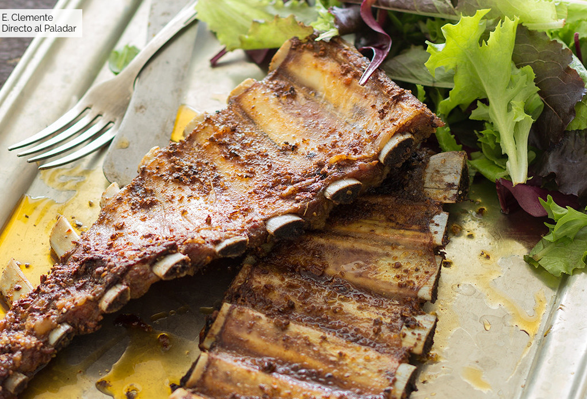

Ingredientes:
- Costillar de cerdo 2
- Diente de ajo 100g
- Pimentón dulce cucharada 1
- Orégano seco
- Pimienta negra molida
- Aceite de oliva virgen extra 200 Ml
- Vino blanco (o cerveza)
- Sal gruesa
Preparacion:
- Comenzaremos machacando en un mortero los ajos o bien si lo queremos muy menudo en una batidora de cuchillas, añadiendo el pimentón, el orégano y la pimienta. Echamos el aceite y mezclamos todo bien. Pintamos con el adobo las costillas de cerdo por todas sus caras y las dejamos durante dos horas en la nevera bien tapadas.
- Precalentamos el horno con calor arriba y abajo a 190 grados. Colocamos la carne en una fuente refractaria y la salamos. Horneamos durante media hora, le añadimos el vino blanco y seguimos horneando otra media hora más o hasta que veamos la carne ya se separa del hueso fácilmente.
Comentarios
Correo Electronico :
Nombre de Usuario :
Nombre de Receta :
Fecha de Comentario :
Enviar